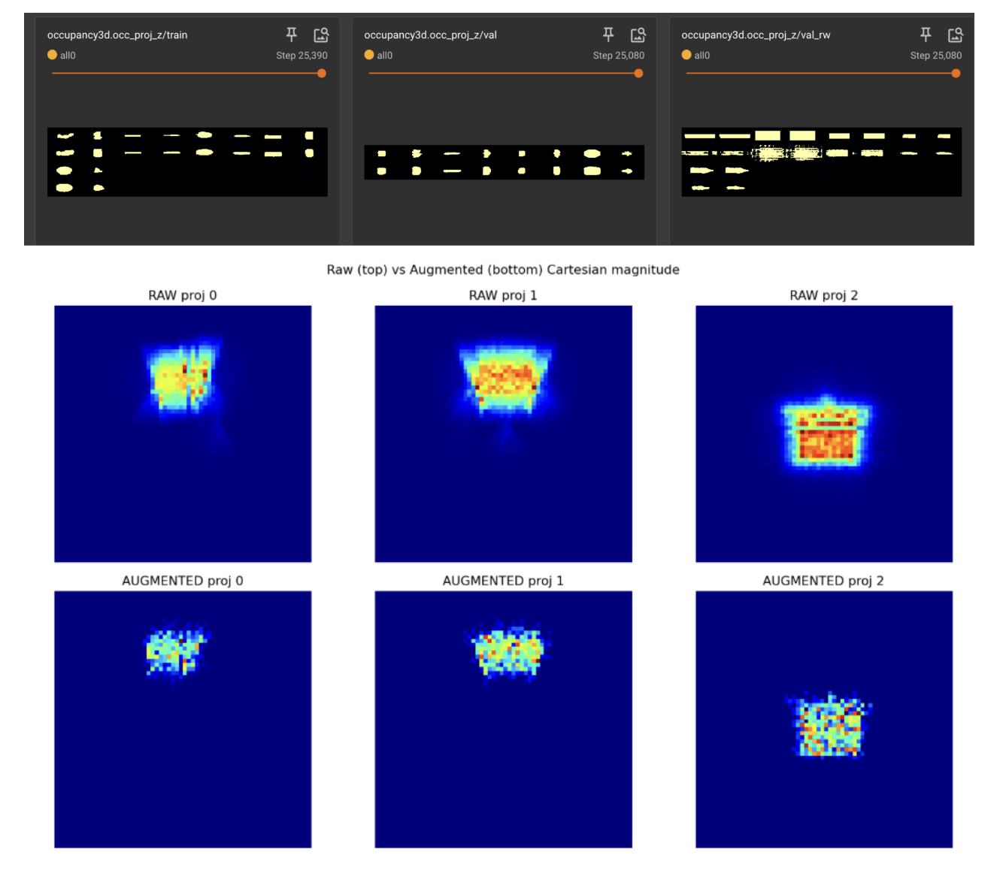

This summer I’ve been working in the Signal Kinetics Lab under Prof. Fadel Adib and Dr. Laura Dodds on 3D occupancy prediction from mmWave radar: recovering volumetric scene structure from sparse radar returns rather than optical sensors.
The work splits into two coupled pipelines:
Training pipeline. I’ve been debugging and extending the NRDK deep-learning pipeline that maps raw mmWave radar data to 3D occupancy predictions. This has involved diagnosing training instability (loss divergence, unstable gradients across configurations), reworking data augmentation to improve generalization, and standing up the GPU compute environment — including getting the training stack working correctly on Blackwell-generation hardware, which required working around driver/library compatibility issues not yet well-documented for this class of GPU.
Synthetic data-generation pipeline. Since real mmWave-labeled 3D occupancy data is scarce, a large part of the work is generating usable synthetic training data. I integrated OmniObject3D as an asset source for more diverse synthetic scenes, and spent significant time on sim-to-real domain gap analysis — characterizing where synthetic radar returns diverge from real-world signal characteristics (noise profiles, multipath, material reflectivity) so the gap doesn’t tank downstream model performance. I also implemented noise injection to make training more robust to real-world signal artifacts, resolved git merge conflicts across parallel pipeline development, and built out multi-GPU parallel generation to make dataset scale tractable.
Development runs on the MIT Media Lab’s matlaber compute cluster (Kerberos-authenticated), so a nontrivial fraction of the summer has also gone into cluster/systems work — environment setup, auth, and getting distributed jobs to run reliably.
The core technical bet: mmWave radar is low-cost, works in darkness, penetrates occlusions, and is inherently privacy-preserving compared to camera-based sensing — but the inverse problem (sparse, noisy reflections → dense 3D occupancy) is hard, and the sim-to-real gap is the main bottleneck standing between synthetic-data-scale training and real-world deployment.